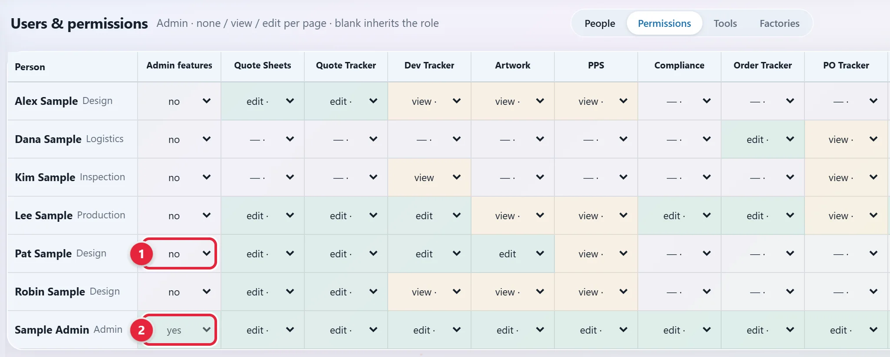
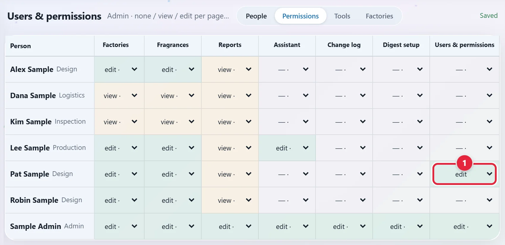
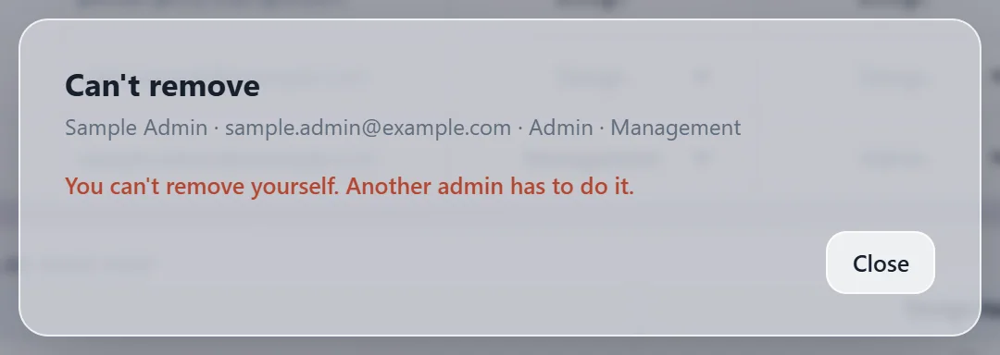
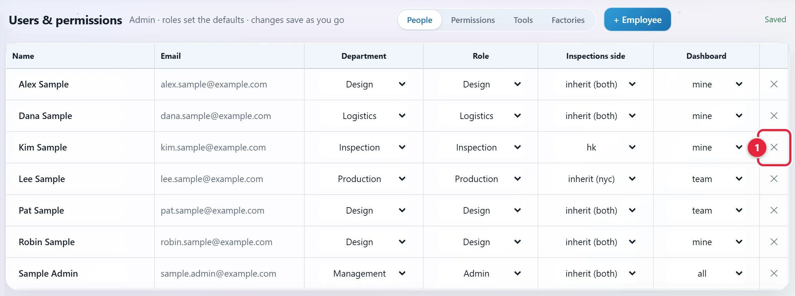
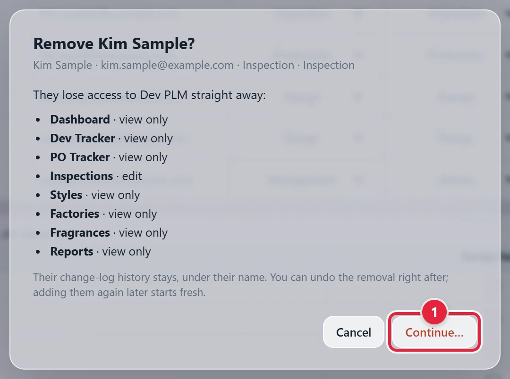
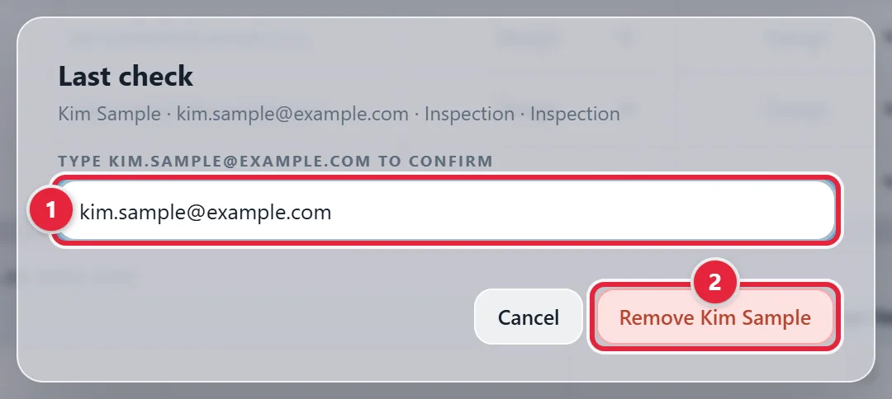
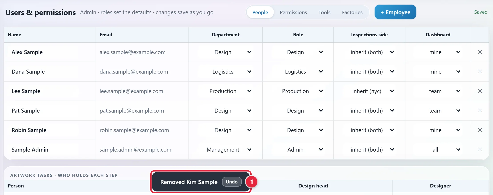
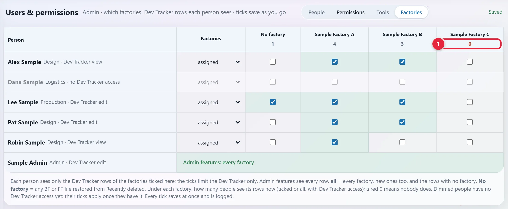
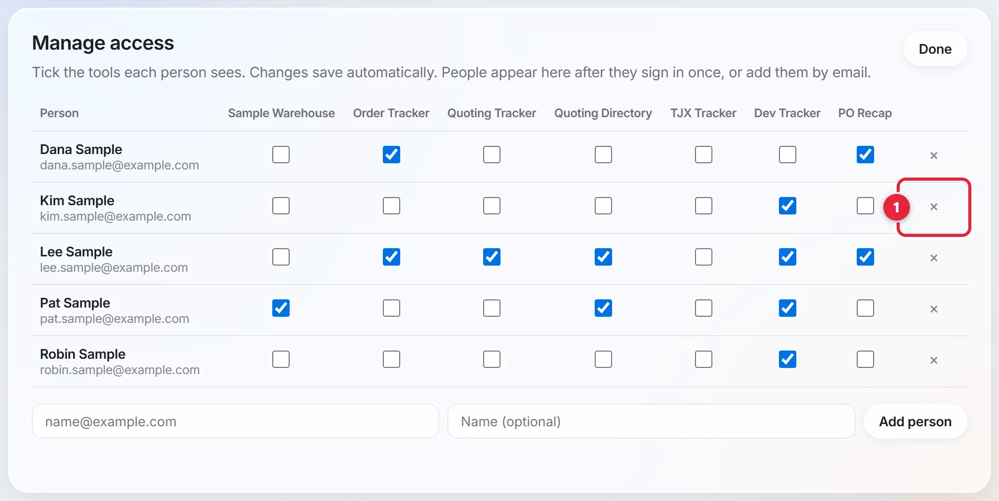
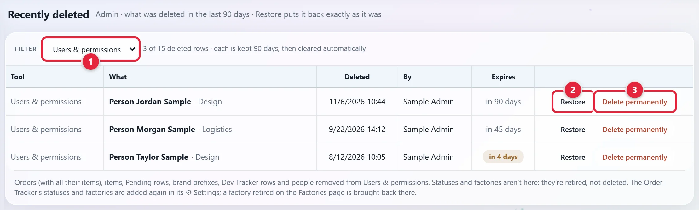

When someone leaves, hand over their work, remove their access from each tool, and recover the equipment.
Draft. The Dev PLM removal steps come from our tools. The steps in this box are general practice, not from a tool. Saul to confirm them, including how the Microsoft account, mailbox and files are handled.
Start with Before you remove access in the yellow Draft note at the top. Then do these in order, by the person's last day. Finish with After you remove access in the same note.
Removed someone by mistake? See Bring someone back.
Screenshots use made-up sample data. Click any picture to see it larger.
Do this only if they're an admin of a tool. If they aren't, go to Remove them from Dev PLM.
Click Open Users & permissions at the top of this guide, then the Permissions tab. If you can't open it, ask Saul. Look at the Admin features column. If the row of the person leaving shows yes, pick yes for the person taking over 1. It saves on its own.

The box is grey 2 for the last admin and for yourself.
Stay on the new admin's row. Scroll right to the last column, Users & permissions, and pick edit 1. Without it they can't open this page.

Or set their Role to Admin on the People tab. That does both steps, but it also gives them edit on every page.
You can't remove yourself, so Dev PLM always keeps one admin. You'd see this popup:

If they hold the SOP Hub's admin role, give that role to someone else in Microsoft Entra, Microsoft's admin site for accounts and app access. In the SOP Hub's app there, Users and groups shows each person's role. The steps are in New Hire Onboarding.
Dev PLM is our web tool for samples and orders.
Click Open Users & permissions at the top of this guide. If you can't open it, ask Saul. On the People tab, find their row. The ✕ is at the far right 1.

The popup lists their pages. Once removed, they lose access to all of it straight away. Their change-log history stays, under their name. Click Continue… 1.

Type their full email in the box 1. The red button works only once the email matches. Click the red button with their name, such as Remove Kim Sample 2.

Their row goes. A message at the bottom says Removed and their name, with Undo beside it 1. It goes after a few seconds.

Click the Factories tab. The number under each factory shows how many people see its Dev Tracker rows. A red 0 1 means nobody does, so tick someone else on that factory.

Admins see every factory but aren't counted, so a 0 is fine if only admins handle it. A 0 is also fine if the factory has no Dev Tracker rows. Saul to confirm this step.
Microsoft Entra is Microsoft's admin site for accounts and app access. Removing them in Dev PLM doesn't remove them there, so do this too. You need admin rights there. If you don't have them, ask Saul.
Go to Enterprise applications. It's in the left menu, and it may read Enterprise apps. Or type it in the search box at the top. Open the app for Dev PLM. Other apps' names start the same way, so check the name, and ask Saul if you're not sure. Then click Users and groups.
Tick the box beside their name. Click Remove assignment, then Yes.
In Microsoft Entra, go to Enterprise applications and open the SOP Hub's app. Saul to confirm its name, so if you can't tell which app it is, ask him. Then click Users and groups.
Tick the box beside their name. Someone with two roles has two rows, so tick both. Click Remove assignment, then Yes.
Click Open Tools Hub at the top of this guide. Manage access is at the top right. If you don't see it, ask Saul.
It's at the end of their row 1. A box asks if you want to remove them, and says they will see no tools. Click OK. Or untick each of their tools instead. It saves on its own.

If they ever sign in again, their row comes back with nothing ticked.
Done is at the top of the panel. It closes the panel.
Some tools use their own access lists, such as the Quote Directory's team list and the SharePoint sites behind other tools.
Click Undo on the message at the bottom. Undo at the top of the page does the same, as long as removing them was your last change. They're back exactly as they were.
Click Open Recently deleted at the top of this guide. In Dev PLM's side menu it's under Work. Only admins can open it. Set the filter to Users & permissions 1 to list removed people. Click Restore on their row 2. They're back exactly as they were, and a message says Restored and who.

Each row is kept 90 days, then cleared automatically. Expires says how long is left, in amber for the last 7 days.
Delete permanently 3 clears the row sooner, after asking you first. They stay removed and leave this list for good. They can still be added again, with a fresh start.
Use + Employee, as in New Hire Onboarding. This is a fresh start, so set their page rights and factories again. See What comes back.
| Undo or Restore | + Employee | |
|---|---|---|
| Role and department | As they were | The ones you pick |
| Page rights | As they were | Cleared, so they come from the role |
| Factory ticks | As they were | Cleared. Factories goes back to assigned and No factory is off. |
| Artwork tasks | As they were | Cleared |
| Admin features | As they were | On only if you pick the Admin role |
| Inspections side, Dashboard | As they were | Back to the defaults |
| Change-log history | Kept | Kept |
| Message | What it means |
|---|---|
| You can't remove yourself. Another admin has to do it. | Ask another admin to remove you. |
| Kim Sample has been removed from Dev PLM. Ask an admin if this is a mistake. | What a removed person sees if they sign in. |
| Kim Sample can't be brought back: kim.sample@example.com is now Lee Sample's email in Dev PLM. Nothing was changed. | Restore was refused, because that email now belongs to someone on the People tab. |
Recently deleted opens only for people with Admin features. Restore and Delete permanently on a person also need edit on Users & permissions.